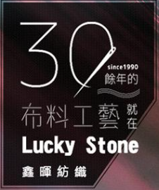

代工的三元素:原料、創新、效率
透過為一些品牌大廠代工，展現自身擁有的特殊技術或機器做出差異化，進而吸引客戶及消費者
優點:純代工成本與一條龍服務成本較低、訂單來源較穩定、市場規模較大
缺點:容易受國際情勢影響
基本要求:生產速度要快、技術創新要快、反映客戶需求要快、原物料來源穩定
台灣機能性布料全球市佔率已達七成，Under Amour、Adidas、The North Face、Columbia、Nike、Marmot、Victoria's Secret等國際知名品牌背後皆有台灣紡織業的參與，且在2018年世界杯足球賽前16強隊伍中，有75%使用台灣機能布料。
客戶群:大型品牌廠、大型成衣加工廠
儒鴻
專精於機能服飾製造，而除了成衣代工外，自行切入「布料研發」，包含布料、染整、設計、成衣上下游的垂直整合，儒鴻都能提供服務，在針織領域發揮一條龍的最大效益。
特點:研發能力(配合地區環境變化運用不同材料，提供不同需求)
突出項目:上衣、褲子
代工所佔比例:50%~60%
客戶為Nike、Adidas、Under Armour等一線運動機能服飾品牌
垂直整合聚陽
為流行成衣製造商
特點:銷售價格接受度高、銷售反應速度快
跨足產品設計、快速3D打樣及原物料整合，直接提供客戶一站式採購服務
主打客群:青年、中年
項目比例:功能性服飾27%、時尚性服飾73%(美國代工佔其中80%)，流行服飾為主力產品，機能性布料佔比持續增加 聚陽前幾大客戶以流行品牌商為主，流行服飾 （ Fashion apparel ） 為主力代工產品，約佔營收比 70% 以上。值得注意的是，運動機能服飾代工的比重節節上升，從 2016 年的 20% 逐漸攀升至 2019 年的 27%。
根據公司說法， 2020 年將加入 4～6個新客戶，主要為運動相關品牌，公司也看好未來瑜伽、慢跑、戶外機能服飾的成長。
客戶包括快時尚品牌GAP、Uniqlo、H&M、 ZARA等。
廣越
全球最大羽絨服飾專業製造廠
特色:品管為首要議題，廣越轉投資尚弘羽絨以增加原料自主性，福懋興業供應其羽絨衣專用防絨布，確保品質穩定。
目標:進軍高階針織服飾、消彌淡旺季間之波動。
缺點:羽絨服飾產業淡旺季較明顯
客戶包括Moncler、Nike、Adidas、The north face、Patagonia、Mont-Bell等戶外、運動品牌。
為迎合特定族群訂單，而發展出針對特殊需求而發展出的新市場，而在未來可發展出自創品牌，自產自銷
市場優勢:差異化、短交期、個性化、接單生產量大
缺點:和代工難以同時進行、產品品質較不穩定
基本要求:設備需求完善、技術創新要快、生產效率要高
客戶群大多是品牌廠、小型團體、公司及社會機構團體
浤德
主業為女裝內銷經銷商
特色:品管為首要議題，進行加工時嚴格要求，進行不使布料退色、毀損的加工方式，，確保品質穩定。
目標:進軍高階針織服飾、消彌淡旺季間之波動。
客戶群主要為女性市場，但同時也有接單生產少男族群服裝
色計
台灣老品牌，於2009年企業再造，致力於台灣在地設計、生產，並透過親民的價格吸引消費者
目標:提供好品質、創意、舒適的生活體驗
營業項目:團體服、班服、制服、POLO衫、帽T、籃球背心、排球衣服、足球衣服、背心、夾克
合作客戶:遠東紡織、中興紡織、OK便利商店、7-11...
鑫暉
以長纖平織布進入紡織市場，隨品質穩定及業務量提升，積極往生產方面整合
特色:生活配件類、團體工作服
客戶有企業及連鎖餐廳等團體制服、中央工廠食品服、貼身涼感內衣褲等。
市場產品以上衣銷量最多，其次是外套，其中，男生銷量沒有比女生多
在設計上，顏色、設計、材質，童裝時尚對細節的重視程度，絲毫不輸給成人服飾。
2015年10月，隨著家庭收入不斷提升，童裝平均購買價格也在逐年提高。因此，隨著二胎政策的全面開放，我國童裝市場將保持較快的增長速度，預計到2023年童裝市場規模將達到2820億元，年均複合增長率為10%。
男、女童裝4：6的銷售占比，也看得出小公主的商機大於小王子：女生洋裝、裙、褲及配件飾品的選擇多樣化，讓家長掏錢包的機會自然多一些。
在台灣，少子化加上人口結構性外移，使得童裝市場近年來交易筆數下降、整體業績受到影響，相反的，則是家長更捨得對孩子投資，因此交易筆數下滑，但是童裝客單價卻不降反升。
- 平價市場
- 平價時尚品牌UNIQLO，不強調流行性，而是標榜「簡單基本款‧多樣色彩選擇‧新材質開發‧價格實惠的好品質」，將基本款服裝視為整體搭配的載台，消費者可自行組搭出自己的風格。
- MIT品牌：成衣品牌Net，它的100％美利諾羊毛衫、時尚棉T，價格平實好搭配，在國內早有口碑。近年更推出Net_W女性專門店，兼顧時尚女性。
- 客戶多為家庭、年輕人(16y以上)、
- 高檔市場
- 個性化市場的複合品牌、配合最新流行趨勢
- 與化妝品、珠寶等產業互相影響
- 銷售方式:百貨實體、網路商店
- 客戶:上班族女性(包含主管級)30%~45~、其次是學生族群25%~30%、第三是家庭主婦10%~15%、其餘職業20%~25%
- 原料選用高檔、華麗、上等的布料
- 慢時尚
- 快速時尚改寫服裝的定義，從此，衣服對人們的意義從「耐穿」紡織品，演化到可「即穿即丟」的快速消耗品，隨之而來的問題必定是不必要的資源浪費，以及追求快速低價所導致的品管問題。
- 下手前會花時間考慮，選擇品質較好的商品，採購商品數量也會減少。
- 材料使用環保材質，替代原有材料，提倡環保愛地球的概念
- 客戶群有以40歲以上、在意穿著舒適度和設計感的女性居多、
- 快時尚
- 快速時尚風，是因為M型社會的來臨，貧富差距兩極化，中產階級快速流逝，消費者均希望以平易的價格擁有時尚。
- 因應高檔服飾變化，做出較符合中產階級成本的服飾，讓一般消費者也能買到平價又高檔的服飾
- 而現在人們發現塊時尚背後的問題太嚴重，許多工廠紛紛退出:環境汙染、庫存滯銷、工時過長、危險的工作環境
- 電子商務市場
- 台灣電子商務市場發展快速，其中網購市場規模，年年以2位數的幅度逐年成長，明年可望突破兆元大關；資策會預估，明年台灣網購市場產值可達1兆34億元，正式突破兆元產值。
- 全台網路服飾高達3萬多家，要從中殺出血路不容易，幾家闖出名號的網購服飾業者，包括Lativ、OB嚴選、東京著衣及PAZZO等，除Lativ外，其餘均專攻網購女裝服飾
- 網路無國界的特色，甚至能讓熱賣產品的壽命延長到一整年，當我們在北半球賣夏裝的同時，南半球賣的就是冬裝。
- 北部為虛擬通路較興盛，中部其次，再來是南部，因為北部網路、物流較廣為使用，南部因地域較廣，部分消費者可能偏向就近實體店面挑選
- 公司規劃:Lativ專注經營官網，在電子商務叢林殺出一條血路；OB嚴選則宣布跨入實體店面；東京著衣則找來凱渥合作，推出新品牌。
- 運動市場
- 戶外服裝宜占總款式的15%
- 室內服裝宜占總款式的43%
- 內衣宜占總款式的10%
- 配件宜占總款式的32%
台灣的服裝市場中，女裝通路五花八門，從幾十萬的精品到一百塊的夜市成衣，東區巷弄放眼望去，女裝店面佔了至少七八成。 而男裝的選擇卻是少之又少，不少對於時尚搭配有熱忱的男性，想要在台灣找到一些有品味有質感的衣服時卻總是買不到自己喜歡的品牌或款式。
2018年僅2.5%男性平均每次上衣花費超過3千，相較之下，下身褲子花費卻不手軟，有8%平均每次花費超過3千元以上，特別是30-39歲、40-49歲、50-59歲，較其他兩個年齡層願意花較高價格購買褲子。
現代因時代變遷、觀念轉換、受其他市場影響，進而也使男性服裝市場逐漸上升
男裝類別有:注重機能的運動服裝、具備文青的時尚衣物、注重形式的西裝、舒適的休閒衣物
- 休閒衣物
- 注重舒適性、平價、耐用性
- 上衣、褲子、外套、其他銷售額比例大約4:3:2:1
- 運動服裝
- 注重機能，外觀簡單、有型
- 年齡族群介於 21 與 60 歲之間的人口
- 戶外服裝宜占總款式的 23%，較女裝的比重為高
- 室內服裝宜占總款式的 36%，與女裝的比重類似
- 內衣宜占總款式的 4%，較女裝的比重小得多
- 配件宜占總款式的 37%，與女裝的比重類似
- 時尚衣物
- 注重流行趨勢、質感、外型上需求
- 年齡市場為20y~35y市場
- 與女性市場的不同於女性消費力較強，價格成本比男生較低
- 男性就會偏向選擇往稀少、差異性質消費
- 西裝
- 銷售以實體店面現場量測客製化較為主流
- 注重儀容姿態、身材貼合度、顏色一致性
100%台灣設計品牌
首先，我國來年服裝市場潛在規模較大。在我國人口比例中，40歲到60歲之間的群體已經超過4億，而60歲以上則達到2.02億，總共加起來超過6億，成為世界上老年人最多的國家。預計到2023年，老年人數量將進一步上升。
目前，我國品牌服裝企業更加專注於中青年市場，涉及老年人群服裝領域的企業數量很少，市場競爭程度較低。老年服裝市場作為一個藍海還有不少潛力。
- 一般功能衣物
對於中低產階級的老人，可能因為他們年輕時的經濟較不好，或因為家庭的緣故，使得自己只能去做工來補貼家用，進而養成注重在功能上的服裝要求，衣櫃裡只有一件是拿來參加餐會或重大場合時才會穿出來
形成一種名為一衣多穿市場
- 影響銀髮族購賣欲的因素
- 色彩
使消費方潛意識上產生的思想、感覺、刺激、回憶、意志進而產生反應。
銀髮族女性大多喜歡合身且樸實舒適的棉質上衣，顏色偏愛紅色、黃色與白色
- 文化差異
中華文化傳統較為保守，左鄰右舍關係較熱絡，但難免有個辣嘴的會有很多意見。
相反的，西方思想較開放，鄰居不太會管太多，進而限制了購買欲。
- 購買成本
老年人的養老金都不一定，有的只要在家泡茶，就可以享晚年，而有的卻還在社會上賺錢
- 服裝設計
人到老年後，身材開始走鐘、姿勢不良，在設計上就需要考量到這點。 銀髮族對於自己的身材最不滿意的地方為腰部與臀部，對於服裝常有的困擾是穿脫不便與版型不合身。
便利性上，以拉鍊裝置為購買考量第一優先，其次是鈕扣，以及清潔便利性
配合季節變化，保暖性、散熱性、防風性、抗寒
- 色彩
- 跨領域合作:智慧製造
智慧型紡織品2016~2024年複合成長率預期可超過35%，且至2024年市場規模將則將可達到美金93億元
目前智慧紡織有六項主要應運領域，包括運動、健身、安全防護、健康管理與醫療照護、軍方應用、娛樂，而台灣業者則多著重在安全防護、健康管理與醫療照護、娛樂三面向
在醫療方面，最常見的是防護衣
- 醫療用防護紡織物
手術用防護衣、傳染病隔離衣、一般衛生用布料紡織品
客戶以醫院、診所需求量最多
- 醫療用感測衣(偵測型)
紡織廠與科技公司合作
結合電子感測技術，使用高舒適度及可拉伸的導電織物，織物的導線布局將影響心電訊號與呼吸訊號的量測，以獨特的銀纖維織布技術，透過人體有最大面積器官的接觸，能提供較多種類的生理訊號量測，有效發揮穿戴裝置系統的潛能
用於協助病患進行長期心臟疾病的預防與追蹤，收集完整且全面的心臟相關數據，藉由穩定長期的監控，有效提升發現與診斷心臟疾病的機會，實現智慧醫療精準醫學及預防醫學的目標。
代表廠:金寶電子以及聚陽
遠東新世紀與NeuroSky共同開發DynaFeed的智慧衣，藉由生物感測器與超薄導電碳納米管薄膜的結合，自動追踪人們在各種鍛煉中的生物信號，以此提供準確且即時生理數據。
- 醫療用感測紡織物(保健型)
使用電子裝置科技，用APP行動智能控制，透過電療舒緩酸痛及刺激肌肉收縮，達到最佳醫療保健效果。
代表廠:豪紳纖維科技
- 運動用感測衣
感測三鐵衣(2PIR)，在不同使用情境下，訊號如何穩定傳輸
產品TENS智慧感測腿套，可偵測小腿肌力及乳酸堆積程度，提供資訊給運動者參考，同時附加藉由低周波按摩器能釋放肌肉壓力的功能。
預計市場為運動健身市場、運動職業選手合作市場
代表工廠:三司達
- 保暖衣
遠紅外線科技功能紗智慧衣先驅OMsignal公司的智慧化衣物
導入杜邦最新導電油墨與薄膜科技Intexar™技術結合Holst Centre的智慧感測衣以及BodyPlus的智慧感測衣。
福懋興業近期亦推出結合紡織、電信、電子及成衣製造之「A+智慧溫控衣」，藉由可調控的主動式發熱及發光元件，讓使用者可透過手機、平板、智慧表等3C裝置，調控智慧衣溫度，讓服飾達到保溫的效果。
力麗集團除推出獨家的環保原液染色纖維（Ecoya）聚酯紗線外，旗下力麗企業更成功打入蘋果供應鏈，為供應鏈中第一家紡織業者。
目標市場為一般生活及運動、醫療
- 時尚
發光衣:配合app設定改變顏色
目標市場:年輕人族群、高檔時尚市場
- 醫療用防護紡織物